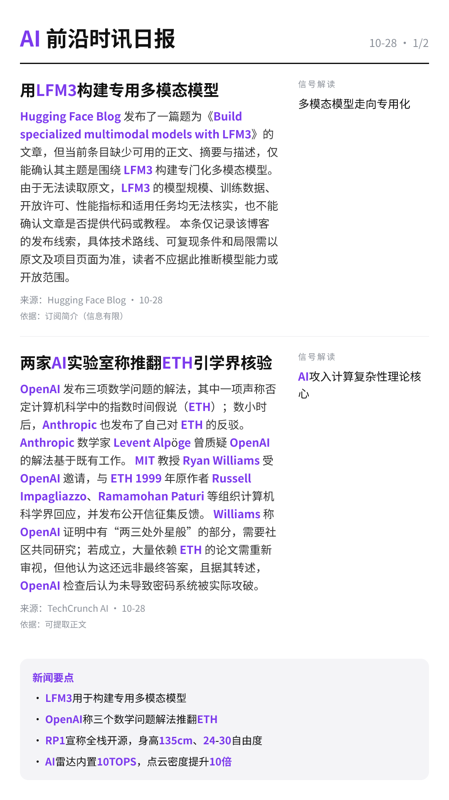

每天高频班次的 AI 领域要闻速览：发生了什么，为什么重要。

Hugging Face Blog 发布了一篇题为《Build specialized multimodal models with LFM3》的文章，但当前条目缺少可用的正文、摘要与描述，仅能确认其主题是围绕 LFM3 构建专门化多模态模型。 由于无法读取原文，LFM3 的模型规模、训练数据、开放许可、性能指标和适用任务均无法核实，也不能确认文章是否提供代码或教程。 本条仅记录该博客的发布线索，具体技术路线、可复现条件和局限需以原文及项目页面为准，读者不应据此推断模型能力或开放范围。
依据：订阅简介（原文未读取） · 原文不可用：缺少可信单篇文章元数据或标题，未把列表当正文；仅依据订阅简介，信息可能不完整
Hugging Face Blog01:16原文链接 ↗
OpenAI 发布三项数学问题的解法，其中一项声称否定计算机科学中的指数时间假说（ETH）；数小时后，Anthropic 也发布了自己对 ETH 的反驳。 Anthropic 数学家 Levent Alpöge 曾质疑 OpenAI 的解法基于既有工作。 MIT 教授 Ryan Williams 受 OpenAI 邀请，与 ETH 1999 年原作者 Russell Impagliazzo、Ramamohan Paturi 等组织计算机科学界回应，并发布公开信征集反馈。 Williams 称 OpenAI 证明中有“两三处外星般”的部分，需要社区共同研究；若成立，大量依赖 ETH 的论文需重新审视，但他认为这还远非最终答案，且据其转述，OpenAI 检查后认为未导致密码系统被实际攻破。
依据：可提取原文正文 · 可提取正文；不含交互图表、图片或付费隐藏内容
TechCrunch AI01:08原文链接 ↗
谷歌DeepMind于周二以研究预览形式发布世界模型Genie 4，称其生成的场景比以往更接近照片级真实，并支持交互。 用户在模拟过程中输入文字即可改变场景，例如切换天气、调整镜头角度或加入新的人物与物体。 模型还能生成与场景匹配的实时音频，包括音乐、环境声和可交互对话。 Genie 4可让同一场景保持一致长达两分钟，是前代Genie 3的两倍，物理表现更接近真实，角色动作也更像人。 Gemini在流程中充当导演，负责规划步骤并检查画面；在一项与Gemini Robotics相关的研究实验中，Gemini 4 Argon模型把任务拆解为步骤，由Genie 4实时模拟，用于在真机之前测试机器人场景。 目前该模型仅向受信任测试者开放，未来数周将开放给Google AI Ultra订阅用户及Gemini API、Google AI Studio的早期合作方。
依据：可提取原文正文 · 可提取正文；不含交互图表、图片或付费隐藏内容
TechCrunch AI00:30原文链接 ↗
该文标题提出“能否信任大语言模型判断研究想法是否新颖”的问题，但当前仅能获取标题，缺少正文、实验设置与结论。 由于没有可见的模型清单、评测方法和样本规模，无法确认作者是否进行了系统实验，也无法核对任何准确率或错误率数字。 这个问题对应科研评审中的现实需求：在投稿或立项前用模型辅助筛选想法，降低人工评审成本。 但“新颖性”本身定义主观，跨领域标准不一，模型判断容易受提示词和训练数据影响。 在缺少公开基线和可复现实验前，不应把大模型的新颖性判断当作可靠结论。
依据：订阅简介（原文未读取） · 原文不可用：缺少可信单篇文章元数据或标题，未把列表当正文；仅依据订阅简介，信息可能不完整
Hugging Face Blog00:12原文链接 ↗
Google DeepMind 发布新一代世界模型 Genie 4，称其在实时模拟中实现了前所未有的真实感。 该信息来自博客订阅简介，正文未提供可核验的技术细节、评测数据或开放范围。 公司没有在可见信息中说明模型架构、训练数据、延迟与分辨率等关键指标，也未给出与前代产品的对比基线。 因此，“前所未有的真实感”目前只是公司自述，不能视为已交付能力。 该条目仅有标题和一句简介，无法确认 Genie 4 是否已开放测试、面向哪些用户以及是否提供 API。
依据：订阅简介（原文未读取） · 原文不可用：未提取到可信文章正文（结构变化或仅简介）；仅依据订阅简介，信息可能不完整
Google DeepMind Blog00:01原文链接 ↗
RoboParty 发布全栈开源人形机器人 RP1，开放范围试图覆盖机械图纸、电气系统、自研关节、底层控制、仿真、训练和部署。 RP1 身高 135cm，提供 24～30 个自由度的多种本体配置，已展示连续行走、人体动作跟踪、扰动恢复和跌倒起身等真机能力。 硬件搭载自研 ROMOMO 一体化旋转关节，官方参数表显示峰值扭矩覆盖 25～160N·m，采用 48V 供电和 CAN-FD 通信；软件配套 500Hz 控制频率与 50Hz 策略更新频率。 RP1 已公开 URDF、MJCF 及网格模型等资源，但 CAD、BOM、电路板制造文件等部分仍属内部工程记录，具体开放范围需以项目仓库为准。 开源项目能否持续维护、复现并允许二次开发，仍待后续检验。
依据：可提取原文正文 · 可提取正文；不含交互图表、图片或付费隐藏内容
量子位20:57原文链接 ↗
千里科技发布一款 AI 4D 毫米波雷达，内置 10 TOPS NPU，支持边缘侧、卫星架构和兼容三种工作模式。 官方称其从天线阵列和波形设计阶段引入算法，在点云检测、测角、点云增强、目标跟踪与分类等环节采用数据驱动模型，减少人工规则和固定阈值依赖。 与上一代 DSP 方案相比，官方披露点云密度提升 10 倍、探测距离提升 40%、鬼影消除提升至 95%、空间角分辨力提升 12 倍；对静止儿童的稳定探测距离为 100 至 150 米。 卫星架构下原始数据输入量可能比传统 4D 雷达多约 100 倍，ADC 带宽做到 6Gbps，中央域控可做多源前融合，边缘侧则输出结构化结果以降低时延和通信负担。 其落地仍受域控算力、高速接口带宽和成本约束，三种模式需按车型平台与功能等级选择。
依据：可提取原文正文 · 可提取正文；不含交互图表、图片或付费隐藏内容
量子位18:40原文链接 ↗
据订阅简介，OpenAI与甲骨文正在扩大合作，计划把企业应用和AI智能体接入ChatGPT，同时为甲骨文的新产品提供支持。 由于原文无法访问（HTTP 403），本次仅有简介信息，合作的具体范围、上线时间、涉及哪些甲骨文产品或智能体能力均未披露，也无法确认是否有金额或排他性条款。 因此，目前只能确认双方合作范围在扩大，实际交付形态尚待官方细节公布。
依据：订阅简介（原文未读取） · 原文不可用：原文HTTP 403；仅依据订阅简介，信息可能不完整
OpenAI Blog15:00原文链接 ↗